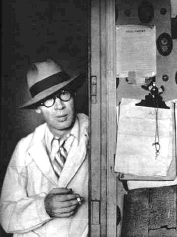
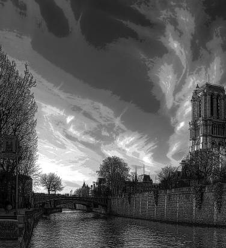
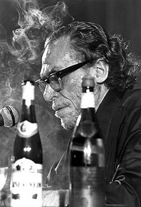

The Effervescence of Henry Miller's Literature
What septarates Henry Millers style from the chaff?
Introduction
Henry Miller is one of the most unique authors that I have read. His prose tackles a range of subjects, oftentimes oxymoronic in nature. His novels tend to be autobiographical, erring on the side of surrealism. He is one of the first authors to blend biography, philosophy, erotica, social criticism and mysticism in a single volume. He was banned in the US and UK until 1961 due to his extreme, explicit nature. In this essay I aim to examine the evolution of Miller's style, the relationship between his erotic and philosophical tendencies, and the cultural significance of his writing.
Characteristics of Miller's Style
His style tends to fluctuate, going from plain, clear narration to sensory driven and close-felt fragments, transcending the narrative, perception the nature of being, rather than being itself. Due to this, it is not easy to isolate what makes Miller's style his own. The best way to differentiate it from others is its effervescence. By disregarding boundaries, he achieves an unrestrained flow of voice. There is a distinction to be made between disregard and outright dismissal. Miller is a great author because he is able to respect some conventions, while trampling over others. His writing is in stream of thought and tends to change pace quickly, but is formatted readably, maintaining a clear overarching narrative.
The Evolution of His Style
While his style also shifts within a book, there is a much sharper distinction between volumes. For instance, in Tropic of Cancer his style is raw, young and fast, a starving artist in France going with the flow. He shifts from noir descriptions of rain in Paris, to a psychological analysis of a woman in a café he sees, and how the way he talks, to them going to her house after he lends her some money, to his musings about the nature of life as he is laying in her bed, to stealing back the money he gave since she is busy with her mother dying of a heart attack, all within a couple pages. The entirety of Tropic of Cancer borders the absurd, with situations and motivations that might seem right out of Don Quixote.
On the complete opposite side, The Colossus of Maroussi is considered one of the greatest travel books ever written. With vibrant descriptions of Greece and the effect it has on him after fleeing from France due to the imminent second world war. The book reads like a testament to the beauty of the world, similar to the finale of Tropic of Cancer (which I will discuss in depth later).
Somewhere in the middle of this spectrum fall most of his other works. From the gut-wrenching events of Nexus to the musing about the act of creation of Plexus, the interpersonal explorations in Sexus, and even the essays in Wisdom of the Heart, the entire range is touched on.
I also believe his style changes with his age, from his first book in 1934, all the way to Nexus II, written in 1961, the style difference may be intentional, but I think his aging plays a role.
The Interweave of the Erotic and Philosophic
In his prose, Miller often showcases a raw, naturalist outlook of the carnal act. I believe this is not for the erotic role, due to the style, instead aiming to illuminate one aspect of the rawness of reality. The breaking of taboo is reflected in his philosophy as well: When nothing is off the table, we can truly begin to understand being.
Something else relevant is his subject matter in philosophy. Unlike other philosophers he does not concern himself with things like morality, or how one should act, preferring more abstract topics: thought itself, life, creation, love etc.
The Uniqueness of His Syntax

The way he writes is what in my opinion, his most appealing trait. His use of grotesque imagery and avoidance of euphemisms, to be exact. His paragraphs and sentences can go on and on for pages, in an intoxicating manner, but still lucid in meaning. I also find fascinating the way he fragments sentences to deliver sharp, philosophical asides, or to break the flow of passages. Other notable devices used are his enumerations and repetitions. With these he often shifts his thoughts slowly, while not starting a new idea. "I believe in God the Father, in Jesus Christ his only begotten Son, in the blessed Virgin Mary, the Holy Ghost, in Adam Cadmium, in chrome nickel, the oxides and the mercurichromes…"
His Overarching Philosophy
Henry Miller's philosophy is that of living the moment, not clinging to bonds, going with the tide, aiming for perfection through imperfection. He takes a solipsist stance at times, especially in The Colossus or The Tropics, the Rosy Crucifixion aiming on elaborating on interpersonal understanding. The tone in which this is portrayed tends to shift, as do his ideas, sometimes unexpectedly, on a whim.
An Example from Tropic of Cancer
To prove my point, I will elaborate on Tropic of Cancer more, as it encompasses it the clearest: For the longest part, Miller gives a bleak perspective, with the second world war on the horizon, the world slowly dying, decaying. This also correlates to Miller's condition in France, barely getting by, always poor and starving. This all culminates with the pages after he talks about Conversations with Goethe, where he goes in depth about the sterility of the world as it and the artist as the absolute destroyer and creator. This might be his most pessimistic section, declaring all hope lost, that we are all doomed, and that all we could do now is to scream instead of sobbing when faced with this.
After what most would consider a hopeless stance, the reader expects the volume to end on a low note, but what happens is far from that. He comes across an old acquaintance of his that is homesick and stuck in a horrible marriage. Miller as the charlatan he is, suggests he runs away, back to America. This person eventually accepts but keeps on having pricks of conscience. For this Miller suggest he write a card and give his savings to his (abusive) wife. He does so, and gives the two to Miller to deliver, boarding the train for London and leaving France.
Miller stops at the first bench, opens the letter, reads it, then throws it away, and keeps the money. He counts it two or three times since it is the first time in a long time he has such money. He takes a cab (which before he stated a hatred for) and simply travels around Paris, describing what he sees in his signature style, but more optimist, nearing on a romanticism.
The last paragraph of the book is one of the most beautiful descriptions of a landmark I have read (the river Seine). I find this ending particularly uplifting, since it is written in contrast with the rest of the book, giving a ray of hope, not bright enough to blind, but enough to illuminate the darkness:"(...) So quietly flows the Seine that one hardly notices its presence. It is always there, quiet and unobtrusive, like a great artery running through the human body. In the wonderful peace that fell over me it seemed as if I had climbed to the top of a high mountain; for a little while I would be able to look around me, to take in the meaning of the landscape.(...)"
Cultural Impact
Henry Miller's cultural impact is hard to understate, especially considering that he was banned for the most part of the 20th century in America, managing to still have a somewhat cult following since his first book. He has had an impact on a lot of writers, such as: Lojze Kovačič, Philip Roth, Cormac McCarthy, etc. However, I will make the case that 2 writers were influenced more than the rest: Anaïs Nin and Charles Bukowski.
Anais Nin was a good friend of his (to put it lightly), with them exchanging a lot of letters over the years, and Nin even having a volume mainly about their relationship (and also his wife at the time) Henry and June. We somehow still don't have the entirety of their prolific writings from the relationship; some still being kept in private collections. She is probably the person whose style was most shaped by him, some portions of one of her journal even being thought of to have been written by him.
Bukowski was quite the opposite. He never met Miller face to face, but over his career, he was always compared to him. His opinion of Miller's work was not a bad one, but critical nonetheless, saying he was "without motion": "that's the way most non-fuckers are". Also, he repeats (ad nauseam I would dare say) in his journals how he was on a cross-county bus and he tried to read Miller but got bored by his tangents and esoteric writing. I guess it is a part of the sport of literature. Knowing Bukowski, him giving this little critique is a compliment.
Henry Miller was also reviewed by quite a lot of other writers, the most famous one I could find being George Orwell: "among the English-speaking races for some years past. Even if that is objected to as an overstatement, it will probably be admitted that Miller is a writer out of the ordinary, worth more than a single glance; and after all, he is a completely negative, unconstructive, amoral writer, a mere Jonah, a passive acceptor of evil, a sort of Whitman among the corpses."
I hope I have made an appealing case for how Miller's effervescent, unstructured style and meld of spiritual, philosophical and taboo differentiate him from any other writer, and why he is not to be understated when discussing "most influential in their category" writers.